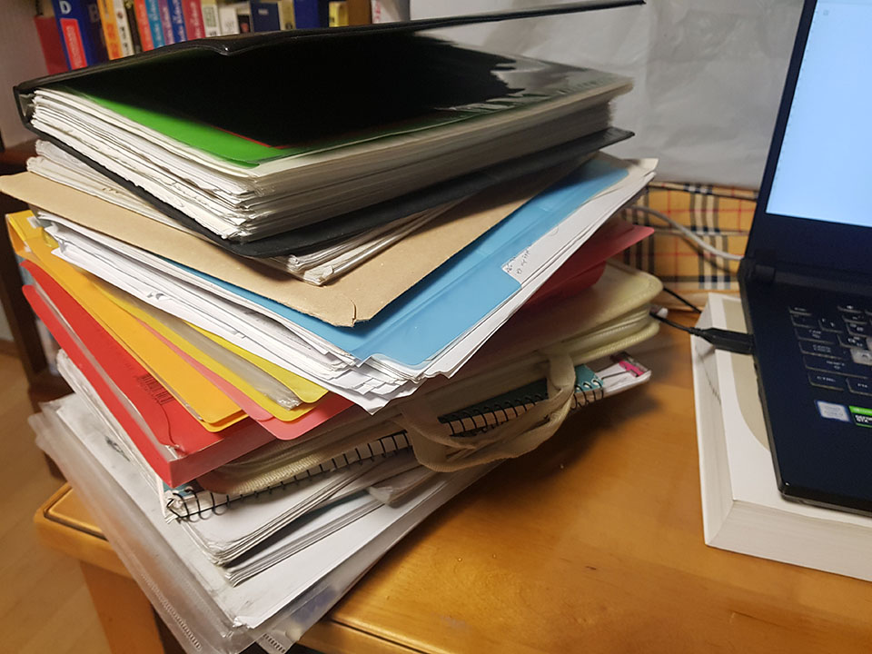
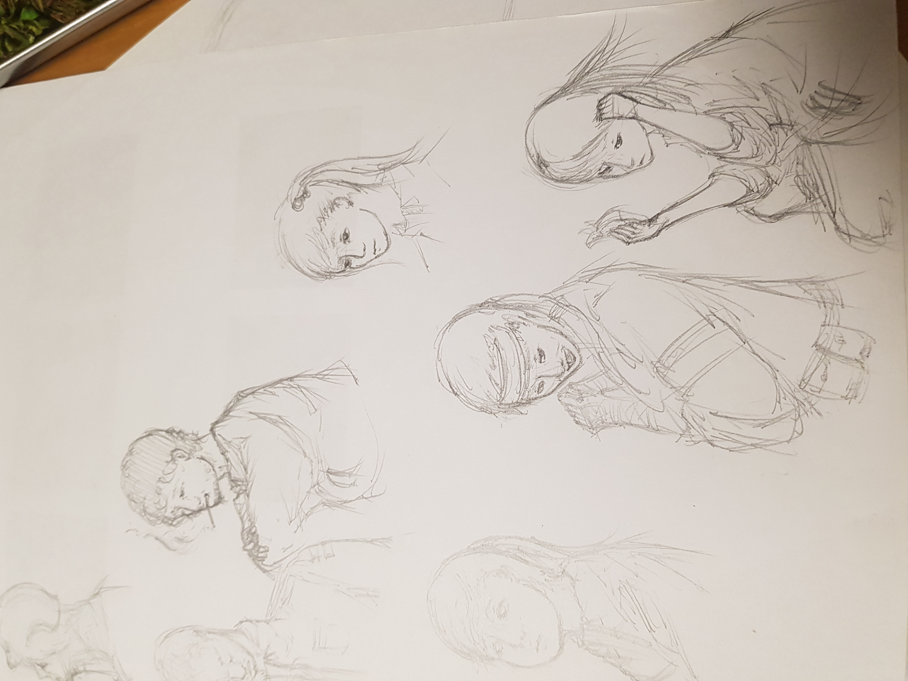

꿈을 꾸었다.
언젠간 내가 여태까지 연재한 기나긴 이야기에 아주 멋들어진 종지부를 찍은 후 편안한 소파 위에 앉아 한 장면씩 넘겨 보며 그때의 추억을 되돌아보는 꿈을…이라는 건 막연한 희망사항에 불구하고 실제로 만화나 영화, 게임 등의 매체에서 나오는 것과 같이 나도 나만의 이야기를 만들어 언젠가는 사람들에게 보여주고 싶다는 소망이 있었다.
하지만 천부적인 재능은 없던 것인지
평범한건 싫다! 이거 신선한데?라는 느낌의 내용을 구상하려 해도 내 기대치를 만족할만한 건 머릿속에서 전혀 나오지 않았다. 특히 예전에 썼던 이야기들이나 기록들을 보면 어디선가 들어본듯한 스토리 구조나 소재 등을 적지 않게 찾아볼 수 있었다.
그렇게 고민에 빠져있던 도중, 의외의 계기로부터이 이야기의 시작을 써내려갈 수 있었다.
꿈이라 해도 평범한 것이 아닌 평소와는 다른 꿈을 꾸게 된 것은 고등학교 시절. 그때부터 난 그 꿈들을 기록하기 시작했고 그 결과 꽤나 많은 자료들이 모였다. 그리고 이러한 꿈들을 토대로 난 내가 원했던 색다른 이야기를 만들 수 있었다. 인상깊었던 점이라면 꿈들의 내용이 내가 현실을 살아가며 겪었던 일상과는 거리가 멀었다는 것이었다.

세계관은 내가 전하고자 하는 이야기의 주 무대가 되는 곳이다.
이는 말하고자 하는 내용을 효율적으로 전달하기 위해 뒷받침되는 요소이며,이야기의 흐름과 맥락, 전체적인 분위기를 잡아주는 아주 중요한 장치이기 때문에 난 세계관을 만드는데 있어 가장 많은 주의와 시간을 들였다. 비록 큰 틀은 앞서 말한 꿈에서 그 영감을 받아 시작했지만, 그 이후에 하나의 이야기라는 것으로 인식되도록 세계관을 통일시키는 것과 마치 하나의 정교한 기계처럼 이상한 점 없이 잘 돌아가도록 뼈와 살을 붙이는 건 이야기에 흥미와 몰입감을 유발하고 싶다면 반드시 해야만 하는 것 중 하나이다.
당장 세계적으로 유명한 작품들을 살펴본다면(예를 들어, 해리포터 시리즈나 스타워즈, 스타트랙 시리즈 등) 아무리 소재나 스토리가 좋다고 해도 그 이야기가 펼쳐질 무대가 준비되어 있지 않다면 우린 그린스크린만을 배경으로 둔 영화들을 보고 있을지도 모른다.
만화를 포함한 여느 매체에서 다루는 캐릭터라는 존재는 인간만을 두고 얘기하는 것이 아니다. 각종 상상동물을 포함해 때론 무기물도 이야기의 주인공이 되기도 하며, 심지어 우리의 인식 밖의 존재, 가령 신과 같은 종류도 거론된다.
하지만 만화를 읽는이는 주로 인간이 될 것이기에(만화를 개미들에게 던져주고 읽게 하진 않을 거다) 주인공이나 등장인물들을 어느 정도 인간으로 설정하는 것이 만화를 읽기에도 편하고 좀 더 와닿게 된다. 때문에 나 또한 사람을 그리게 됐지만, 그림에 특출난 재능이 없던 난 이런저런 어려움을 많이 겪었다.

그러다 이럴 수 없다며 그림 실력을 올리기 위해 끊임없이 노력해 이젠 어느 정도 자신감이 붙기 시작했다. 특히 사람 얼굴은 개인적으로 그리기 어려웠던 것 중 하나로 계속된 보고 그리는 방식의 연습을 계속했으며 후엔 인체 해부도, 크로키 등의 연습도 이어나간 결과...
오히려 자신있는 축에 속한다.
사람의 경우 어느 정도 사람답게 그려야 하지만(우리가 거북이를 보고 사람이라 하지 않는 것처럼) 그렇지 않을 경우 그 가능성이 무한대로 뻗어나가기 때문이다. 그 결과 좀 더 자유로운 발상을 마음껏 펼칠 수 있는 요소들을 즐기는 편이다.
분명 꿈을 통해 좋은 아이디어를 얻는 것은 사실이지만, 그것 하나만으로는 부족한 느낌이 적지 않아 있다. 내가 원하는 꿈을 언제 어디서든 꾸는 것도 아니고, 그런 우연이 계속된다는 보장도 없기 때문에 굳이 꿈이 아니더라도 아이디어를 얻을 만한 곳을 찾아야만 했고, 그저 주변을 둘러보는 것만으로도 그리 어렵지 않게 찾을 수 있었다.
그러나 역시 중요한 것이라 한다면 폭넓은 사고와 경험이라고 할 수 있다. 너무 한곳에만 몰두하게 되면 재미나 다양성을 잃을 수 있으며, 경험의 경우 아는 만큼 보인다고 할 만큼 아이디어를 내는데 있어서는 중요한 요소이다. 개인적으로 기괴하거나 새로운 생물체들을 그리기 위한 아이디어를 생각할 때는 물감을 묻힌 팔레트를 꺼내 그 위로 번지는 물감의 모양을 보고 그리기도 한다.
언젠가는 연재를 계획 중이지만 당분간은 확답을 못할것 같다. 실제로 연재를 하고 있는 몇몇의 작가분들에게 여쭤본 결과, 연재를 하게 된다면 뭐니뭐니해도 시간을 엄수하는 것이 가장 큰 요인이자, 대부분의 사람들이 딜레마에 빠지는 가장 큰 이유이다.
만화의 한 컷을 그리는데 들어가는 시간을 잘 배분해야 하며, 때론 자신의 원래의 그림 실력이나 스타일을 바꾸게 되는 결과를 가져오기도 한다.
하지만 그림을 완성했을 때와 마찬가지로 한 화씩, 조금씩 조금씩 만들어져가는 내 이야기를 보게 된다면 그때의 감정은 그 어떤 때와도 비교할 수 없을 것이다.